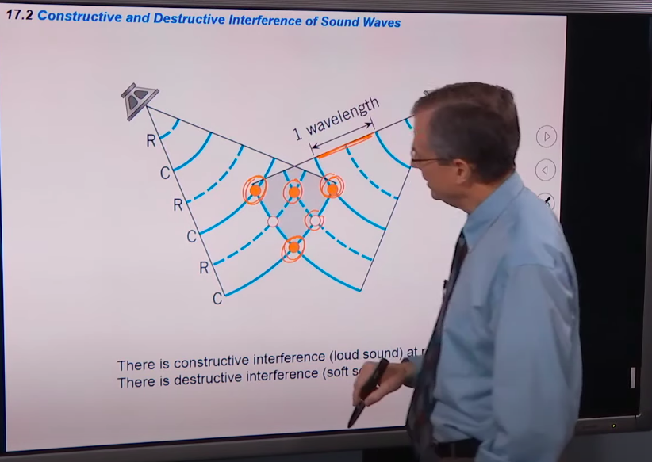
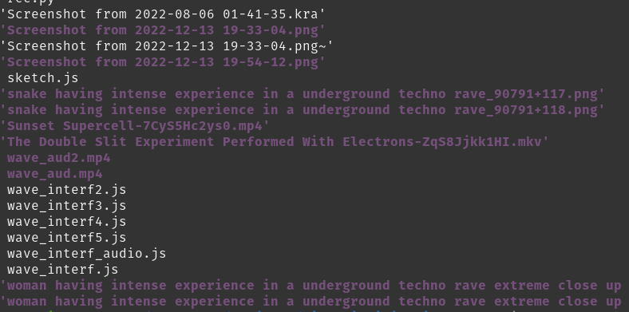

El viernes 16/12/2022 voy a estar visualeando una buena jornada - de 00 a 5am aprox- en chilli street food, córdoba, acompañando al b2b de Igna Igna y closed i.
Cuando visualeo de 3 a 6 horas me gusta elegir el tema/concepto detrás de lo que visualeo con cuidado. Este tema no solo estará en mi mente durante bastante tiempo, sino también en la mente (aunque sea inconsciente) de las personas que participen del evento.
He notado que el tema elegido me afecta. Me ha pasado de arrepentirme del tema elegido - sentirlo como una carga. Por ej me ha pasado de elegir simbología cargada y sentir que tendía a lo truculento de forma incontrolable.
Por la posibilidad de afectar también a otres, esta decisión constituye una cuestión ideológica fuerte.
Pienso mucho en esto desde el inicio de la pandemia. Qué tipo de imágenes tengo que mostrar en eventos? Qué sensaciones quiero sugerir a la gente? Cómo relaciono imágenes dentro de las n paredes de un boliche/bar/evento con lo que está sucediendo en el aquí y ahora?
Ante estas situaciones de largas noches de livecoding, más allá de la puesta técnica, siento que tengo un micrófono y parlantes gigantes.
Tengo dando vueltas hace varios días la cuestión cuántica... la dualidad partícula-onda, el rol de la observación y el acto de enunciación.

17.2 Constructive and Destructive Interference of Sound Waves
Por el largo de la perfo, tengo que armar algo que me de muchos recursos por donde encarar los distintos momentos de la noche... Necesito espacio para hacer movimientos conceptuales, rítmicos, cantidad de luz, cantidad de color, abstracción, mímesis, glitch, manteniendo un hilo conector. A menos que en el experimento pueda detectar que no esté funcionando, y ahí el plan B. Tengo un par de shaders con los cuales me siento lo suficientemente cómoda como para estar múltiples días seguidos livecodeando, sabiendo que van a generar cosas increibles y audiorreactivas. Como ya conozco que logran esto y los he visto en prácticas, los dejo para momentos donde tengo que salir rápido, o por el contexto necesito confianza extra y no me quiero esforzar tanto.

Wave interference in 2d
his was quite nice, thanks..
since i'm ready for bed some winding down is in order: good night everyone, be nice, have fun. feel free to stop anytime and close your eyes :}
our hearing has greater resolution than our vision, yet vision is our dominant sense.
the ears and the eyes constantly generate signals that are interpreted by the brain.. as babies the brain is not trained to interpret the 'surroundings' and does not mask out 'unnecessary' signals. as we grow up the brain learns to mask parts of the signals it receives. the signals still come in but are ignored. we don't see our noses although the nose does block our line of sight and we don't hear reflections of the sound as it bounces off the walls in a room (unless the amplitudes and delays are large enough such as in a church/cave/etc). sleep can be interrupted by a sound but if that sound becomes familiar enough to us we don't hear it any longer (gets ignored) while asleep and it doesn't wake us up (the noises can be quite loud).
fun facts: this is a reversible process. it feels effortless to train our brain to leave out signals but it takes great effort to undo these adjustments. some blind persons learn to use their hearing for echo-locating purposes. some can identify small objects by producing a sound and listening to the reflections. some can ride a bicycle in crowded areas and avoid moving obstacles.
babies' and children's brains do a tremendous amount of processing but it is in the background. next time you encounter a child that may seem slow to understand things or can't seem to pay attention, imagine how their brain is not slow but rather the background processes take a huge percentage of the computing power. we couldn't do easily that much "thinking/analyzing" in a conscious way as adults :}